<title>Shaifur Rahaman</title>
<link rel="preconnect" href="https://fonts.googleapis.com">
<link rel="preconnect" href="https://fonts.gstatic.com" crossorigin>
<link rel="stylesheet" href="https://fonts.googleapis.com/css2?family=Archivo:wght@400;500;600&family=Newsreader:ital,opsz,wght@0,6..72,300..600;1,6..72,300..400&display=swap">
<style>
:root{
  --bg:#FCFBFC;
  --surface:#FFFFFF;
  --soft:#F6F2F5;
  --line:#EBE5EB;
  --line-2:#DED6DE;
  --text:#3A353F;
  --text-2:#726B78;
  --text-3:#A199A8;
  --accent:#C0567D;
  --accent-deep:#A34163;
  --accent-soft:#FBEFF4;
  --green:#4E8A6B;
  --green-soft:#EDF5F0;
  --lift:0 1px 2px rgba(58,53,63,.04), 0 10px 26px -18px rgba(58,53,63,.22);
  --serif:'Newsreader',Georgia,'Times New Roman',serif;
  --sans:'Archivo','Helvetica Neue',Arial,sans-serif;
}
*{box-sizing:border-box}
figure,dl{margin:0}
body{
  background:var(--bg); color:var(--text);
  font-family:var(--sans); font-size:15.5px; line-height:1.62;
  -webkit-font-smoothing:antialiased;
}
img{max-width:100%; display:block}
a{color:var(--accent-deep); text-decoration:none}
:focus-visible{outline:2px solid var(--accent); outline-offset:3px; border-radius:3px}

.wrap{width:100%; max-width:960px; margin-inline:auto; padding-inline:26px}

h1,h2,h3{font-family:var(--serif); font-weight:400; margin:0; text-wrap:balance; letter-spacing:-.01em}
h1{font-size:clamp(34px,5.2vw,54px); line-height:1.1}
h2{font-size:clamp(25px,3.2vw,34px); line-height:1.15}
h3{font-size:19px; line-height:1.3}
h4{font-family:var(--sans); font-size:14.5px; font-weight:600; margin:0; line-height:1.35}
p{margin:0; max-width:66ch}
em{font-family:var(--serif); font-style:italic}

.eyebrow{
  font-size:11px; font-weight:600; letter-spacing:.17em;
  text-transform:uppercase; color:var(--accent); 
}
.lede{font-size:17.5px; line-height:1.6; color:var(--text-2)}
section{padding-block:clamp(44px,6vw,72px)}
section+section{border-top:1px solid var(--line)}
.sec-head{display:flex; flex-direction:column; gap:10px; margin-bottom:30px}

/* hero */
.hero{padding-block:clamp(44px,7vw,84px) clamp(34px,4vw,54px)}
.hero h1{margin-block:14px 18px}
.facts{display:flex; flex-wrap:wrap; gap:8px; margin-top:28px}
.facts div{
  background:var(--surface); border:1px solid var(--line); border-radius:99px;
  padding:6px 15px; font-size:13px; color:var(--text-2);
}
.facts div b{color:var(--text); font-weight:600}

/* capability grid */
.caps{display:grid; grid-template-columns:repeat(auto-fit,minmax(195px,1fr)); gap:22px}
.cap{display:flex; flex-direction:column; gap:6px}
.cap p{font-size:14.5px; color:var(--text-2)}

/* generic keyed list */
.stack{display:flex; flex-direction:column; gap:15px}
.item{display:grid; grid-template-columns:118px 1fr; gap:16px; align-items:baseline}
.item .k{font-size:11px; font-weight:600; letter-spacing:.11em; text-transform:uppercase; color:var(--accent)}
.item p{font-size:15px; color:var(--text-2)}
.item p b{color:var(--text); font-weight:600}
@media (max-width:580px){ .item{grid-template-columns:1fr; gap:3px} }

/* project */
.gallery{display:grid; grid-template-columns:repeat(auto-fit,minmax(118px,1fr)); gap:12px; margin-block:6px 8px}
.shot{border:1px solid var(--line-2); border-radius:11px; overflow:hidden; background:var(--surface); box-shadow:var(--lift)}
.shot img{aspect-ratio:1080/2400; object-fit:cover; object-position:top}
figcaption{font-size:11px; color:var(--text-3); margin-top:7px; text-align:center}

.dec{display:grid; grid-template-columns:repeat(auto-fit,minmax(255px,1fr)); gap:20px 30px}
.dec div{display:flex; flex-direction:column; gap:4px}
.dec p{font-size:14.5px; color:var(--text-2)}

.chip{
  display:inline-flex; align-items:center;
  font-size:10.5px; font-weight:600; letter-spacing:.09em; text-transform:uppercase;
  padding:2px 8px; border-radius:99px; background:var(--soft); color:var(--text-2);
}
.chip.live{background:var(--green-soft); color:var(--green)}

/* swatches */
.swatches{display:grid; grid-template-columns:repeat(auto-fit,minmax(96px,1fr)); gap:10px}
.sw .box{height:46px; border-radius:7px; border:1px solid var(--line-2)}
.sw .meta{font-size:11.5px; line-height:1.4; color:var(--text-3); margin-top:7px}
.sw .meta b{display:block; color:var(--text); font-weight:600}

/* top bar */
.top{position:sticky; top:0; z-index:5; background:color-mix(in srgb, var(--bg) 88%, transparent); backdrop-filter:blur(10px); -webkit-backdrop-filter:blur(10px); border-bottom:1px solid var(--line)}
.top .wrap{display:flex; align-items:center; justify-content:space-between; gap:16px; height:54px}
.top .name{font-family:var(--serif); font-size:18px; color:var(--text)}
.top nav{display:flex; gap:18px; font-size:13.5px}
.top nav a{color:var(--text-2)}
.top nav a:hover{color:var(--accent-deep)}
@media (max-width:480px){ .top nav{gap:12px} .top .name{font-size:16px} }

/* project meta line */
.meta-row{display:flex; flex-wrap:wrap; gap:8px; margin-top:4px}

/* web screenshots */
.web-gallery{display:grid; grid-template-columns:repeat(2,1fr); gap:14px; margin-block:6px 18px}
.web-gallery .shot img{aspect-ratio:16/10; object-fit:cover; object-position:top left}
.web-gallery .wide{grid-column:1/-1}
.web-gallery .wide img{aspect-ratio:auto}
@media (max-width:580px){ .web-gallery{grid-template-columns:1fr} }
.gallery.g4{grid-template-columns:repeat(4,1fr); gap:16px}
@media (max-width:580px){ .gallery.g4{grid-template-columns:repeat(2,1fr)} }
.sub{font-size:13px; font-weight:600; color:var(--text-2); margin-block:26px 12px}

/* style studies */
.studies{display:grid; grid-template-columns:repeat(auto-fill,minmax(260px,1fr)); gap:26px 18px}
.study{display:flex; flex-direction:column; gap:9px; color:var(--text)}
.study .thumb{border:1px solid var(--line-2); border-radius:11px; overflow:hidden; box-shadow:var(--lift); background:var(--soft)}
.study .thumb img{width:100%; height:auto; aspect-ratio:16/10; object-fit:cover; object-position:top; transition:transform .5s ease}
.study:hover .thumb img{transform:scale(1.03)}
.study h4{display:flex; justify-content:space-between; gap:10px}
.study h4 span{font-weight:400; color:var(--text-3); font-size:12.5px}
.study p{font-size:13.5px; line-height:1.5; color:var(--text-2)}

/* contact */
.contact{display:flex; flex-wrap:wrap; gap:10px; margin-top:22px}
.contact .btn{word-break:break-word; text-align:center}
.btn{
  font-size:14.5px; font-weight:600; padding:10px 22px; border-radius:99px;
  border:1px solid var(--accent); background:var(--accent); color:#fff;
}
.btn:hover{background:var(--accent-deep); border-color:var(--accent-deep)}
.btn.ghost{background:none; color:var(--text); border-color:var(--line-2)}
.btn.ghost:hover{border-color:var(--accent); color:var(--accent-deep); background:none}
footer{border-top:1px solid var(--line); padding-block:22px 34px}
.foot{display:flex; flex-wrap:wrap; gap:12px; justify-content:space-between; font-size:12px; color:var(--text-3)}
@media (prefers-reduced-motion:reduce){*{animation:none!important; transition:none!important}}
</style>

<header class="top">
  <div class="wrap">
    <a class="name" href="#">Shaifur Rahaman</a>
    <nav aria-label="Sections">
      <a href="#pinktrack">Work</a>
      <a href="#studies">Studies</a>
      <a href="#contact">Contact</a>
    </nav>
  </div>
</header>

<main>
  <div class="wrap">

  <section class="hero">
    <div class="eyebrow">Shaifur Rahaman · Dhaka, Bangladesh</div>
    <h1>UI/UX &amp; product designer, seven years of mobile and web interfaces.</h1>
    <p class="lede">I design products for clients and companies — mobile apps, web apps, dashboards and the design systems that hold them together. I care most about the states other people skip: empty, stale, offline, failed.</p>
    <div class="facts">
      <div><b>7 years</b> experience</div>
      <div><b>Mobile</b> Android &amp; iOS</div>
      <div><b>Web</b> apps &amp; dashboards</div>
      <div><b>Design systems</b> &amp; handoff</div>
      <div><b>Builds</b> Compose &amp; front-end</div>
      <div>Open to <b>senior roles</b>, remote</div>
    </div>
  </section>

  <section id="what">
    <div class="sec-head">
      <div class="eyebrow">What I do</div>
      <h2>Four things clients hire me for</h2>
    </div>
    <div class="caps">
      <div class="cap">
        <h4>Product &amp; interaction design</h4>
        <p>End-to-end flows for mobile and web — from the problem definition through wireframes, prototypes and shipped screens.</p>
      </div>
      <div class="cap">
        <h4>Design systems</h4>
        <p>Tokens, components and usage rules that survive real implementation, so a team stays consistent without me in the room.</p>
      </div>
      <div class="cap">
        <h4>Interface &amp; visual craft</h4>
        <p>Type, colour, hierarchy and motion. Interfaces that stay legible on cheap hardware and in bad light, not just in the mockup.</p>
      </div>
      <div class="cap">
        <h4>Design that ships</h4>
        <p>I build in Jetpack Compose and on the front end, so handoff is a conversation about decisions rather than a pile of redlines.</p>
      </div>
    </div>
  </section>

  <section id="pinktrack">
    <div class="sec-head">
      <div class="eyebrow">Selected work · 01</div>
      <h2>PinkTrack</h2>
      <p class="lede">A live bus-tracking app for Dhaka&rsquo;s women-only routes. Sole designer, and I built the UI in Jetpack Compose on Firebase.</p>
    </div>

    <div class="gallery g4">
      <figure><div class="shot"></div><figcaption>Sign in</figcaption></figure>
      <figure><div class="shot"></div><figcaption>Home</figcaption></figure>
      <figure><div class="shot"></div><figcaption>Live map</figcaption></figure>
      <figure><div class="shot"></div><figcaption>Notices</figcaption></figure>
      <figure><div class="shot"></div><figcaption>Profile</figcaption></figure>
      <figure><div class="shot"></div><figcaption>Credits</figcaption></figure>
      <figure><div class="shot"></div><figcaption>Plans</figcaption></figure>
      <figure><div class="shot"></div><figcaption>Menu &amp; SOS</figcaption></figure>
    </div>

    <div class="stack" style="margin-top:34px">
      <div class="item"><div class="k">Problem</div><p><b>Live data is sparse and often stale</b>, so the interface had to stay trustworthy on the many days it has almost nothing to show.</p></div>
      <div class="item"><div class="k">Constraints</div><p>Budget Android phones, 2G dead zones, mixed-literacy bilingual users, and a ৳15 price ceiling that rules out subscriptions and cards on file.</p></div>
    </div>

    <h3 style="margin-top:38px">Decisions</h3>
    <div class="dec" style="margin-top:16px">
      <div><h4>Lead with the truth</h4><p>The home screen states <em>1 bus on the road</em> in words, rather than hiding sparse coverage behind a map you pan around to find nothing.</p></div>
      <div><h4>Green means live, only</h4><p>One saturated bar per screen, reserved system-wide for <em>happening right now</em>. Never decoration.</p></div>
      <div><h4><span class="chip">inactive</span> stays visible</h4><p>Dormant routes remain listed and labelled, so riders learn the network and expectations are set before the tap.</p></div>
      <div><h4>Speed builds trust</h4><p>The tracking sheet shows 1.0 km/h — a bus in traffic. The unflattering number proves the dot is live, not a confident-looking stale position.</p></div>
      <div><h4>Priority by weight</h4><p><span class="chip live">service</span> is the only filled badge in the notices feed. Schedule changes are what a rider at a stop needs; offers recede.</p></div>
      <div><h4>Credits, not billing</h4><p>Prepaid top-up is the dominant money metaphor locally, and it sidesteps recurring card billing most users don&rsquo;t have.</p></div>
    </div>

    <h3 style="margin-top:42px">System</h3>
    <p style="margin-block:10px 18px; color:var(--text-2); font-size:15px">Pink is the service&rsquo;s name and its safety signal, so it had to carry brand, identity and emphasis at once without turning every surface into a highlight. Six components — status hero, route card, badge, plan card, bottom sheet, list row — assemble every screen.</p>
    <div class="swatches">
      <div class="sw"><div class="box" style="background:#D6246B"></div><div class="meta"><b>Pink 600</b>Primary</div></div>
      <div class="sw"><div class="box" style="background:#F9D7E3"></div><div class="meta"><b>Pink 100</b>Cards</div></div>
      <div class="sw"><div class="box" style="background:#FDF5F7"></div><div class="meta"><b>Pink 25</b>Background</div></div>
      <div class="sw"><div class="box" style="background:#15603C"></div><div class="meta"><b>Green</b>Live only</div></div>
      <div class="sw"><div class="box" style="background:#2B1119"></div><div class="meta"><b>Plum</b>Text</div></div>
      <div class="sw"><div class="box" style="background:#0B5FA5"></div><div class="meta"><b>Blue</b>Identity</div></div>
    </div>
  </section>

  <section id="ecosync">
    <div class="sec-head">
      <div class="eyebrow">Selected work · 02</div>
      <h2>EcoSync</h2>
      <p class="lede">Waste management for Dhaka North City Corporation: an operations dashboard for the people who move the city&rsquo;s waste, and an Android app for the citizens who produce it. Built by a team of three from SUST for Code Samurai 2024.</p>
      <div class="meta-row">
        <span class="chip">Web · Next.js &amp; Ant Design</span>
        <span class="chip">Android · Jetpack Compose</span>
        <a class="chip" href="https://github.com/bipulhf/EcoSync" target="_blank" rel="noopener">Source on GitHub</a>
      </div>
    </div>

    <div class="sub">Operations dashboard</div>
    <div class="web-gallery">
      <figure class="wide"><div class="shot"></div><figcaption>Landing</figcaption></figure>
      <figure><div class="shot"></div><figcaption>Admin dashboard</figcaption></figure>
      <figure><div class="shot"></div><figcaption>Station to landfill route</figcaption></figure>
      <figure><div class="shot"></div><figcaption>Collection schedule</figcaption></figure>
      <figure><div class="shot"></div><figcaption>Fleet optimisation</figcaption></figure>
    </div>

    <div class="sub">Citizen app</div>
    <div class="gallery">
      <figure><div class="shot"></div><figcaption>Welcome</figcaption></figure>
      <figure><div class="shot"></div><figcaption>Events</figcaption></figure>
      <figure><div class="shot"></div><figcaption>Rate an event</figcaption></figure>
      <figure><div class="shot"></div><figcaption>Polls</figcaption></figure>
      <figure><div class="shot"></div><figcaption>Report an issue</figcaption></figure>
      <figure><div class="shot"></div><figcaption>Announcements</figcaption></figure>
      <figure><div class="shot"></div><figcaption>Profile</figcaption></figure>
    </div>

    <div class="stack" style="margin-top:34px">
      <div class="item"><div class="k">Problem</div><p><b>Four roles share one system</b> — admin, station manager, landfill manager and contractor manager — and each needs a different slice of the same trucks, tonnes and routes.</p></div>
      <div class="item"><div class="k">Constraints</div><p>A competition timeline, operators working from map-heavy desktop screens, and citizens on budget Android phones.</p></div>
    </div>

    <h3 style="margin-top:38px">Decisions</h3>
    <div class="dec" style="margin-top:16px">
      <div><h4>The header says who you are</h4><p>The top bar changes colour by role — blue for admin, green for a station manager — so nobody edits a landfill while thinking they are looking at a station.</p></div>
      <div><h4>Answer the dispatcher&rsquo;s question</h4><p>A station page leads with distance and drive time to its landfill, drawn on the map, because that is what decides the next truck.</p></div>
      <div><h4>Citizens act, not just read</h4><p>The app is built around doing something: join a cleanup, vote in a poll, photograph an overflowing bin. Announcements are one tab of five, not the home screen.</p></div>
    </div>
  </section>

  <section id="studies">
    <div class="sec-head">
      <div class="eyebrow">Style studies</div>
      <h2>Twelve screens, twelve visual languages</h2>
      <p class="lede">Small, complete product screens, each built in one modern UI style with that style&rsquo;s real techniques. Every one is live HTML and CSS, so open them and resize.</p>
    </div>
    <div class="studies">
      <a class="study" href="concepts/glassmorphism.html">
        <div class="thumb">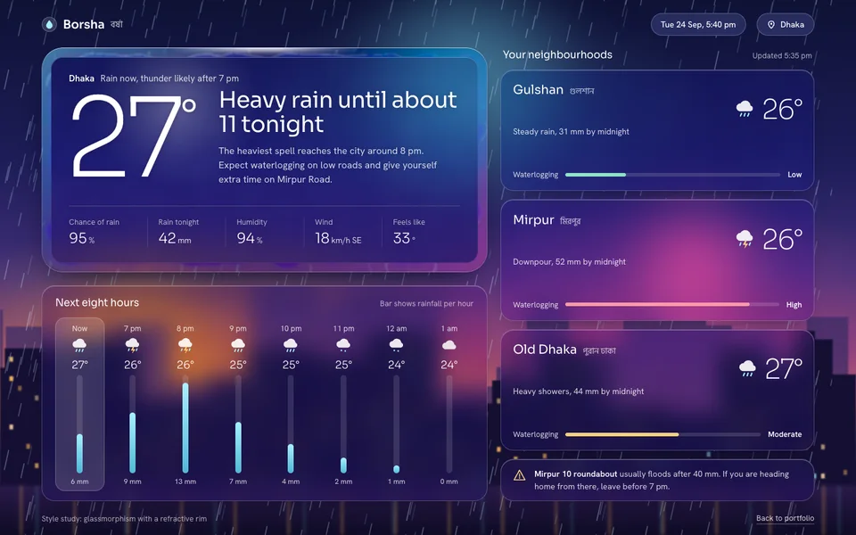</div>
        <h4>Glassmorphism <span>Weather</span></h4>
        <p>A monsoon forecast for Dhaka with neighbourhood waterlogging risk, on glass with a refractive rim.</p>
      </a>
      <a class="study" href="concepts/neumorphism.html">
        <div class="thumb">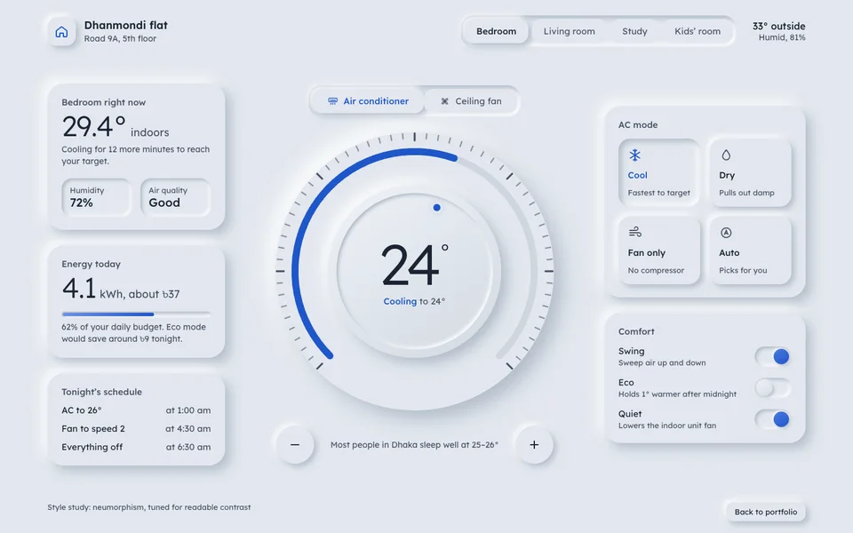</div>
        <h4>Neumorphism <span>Smart home</span></h4>
        <p>A climate controller for a Dhanmondi flat — soft extruded controls, tuned for readable contrast.</p>
      </a>
      <a class="study" href="concepts/neo-brutalism.html">
        <div class="thumb">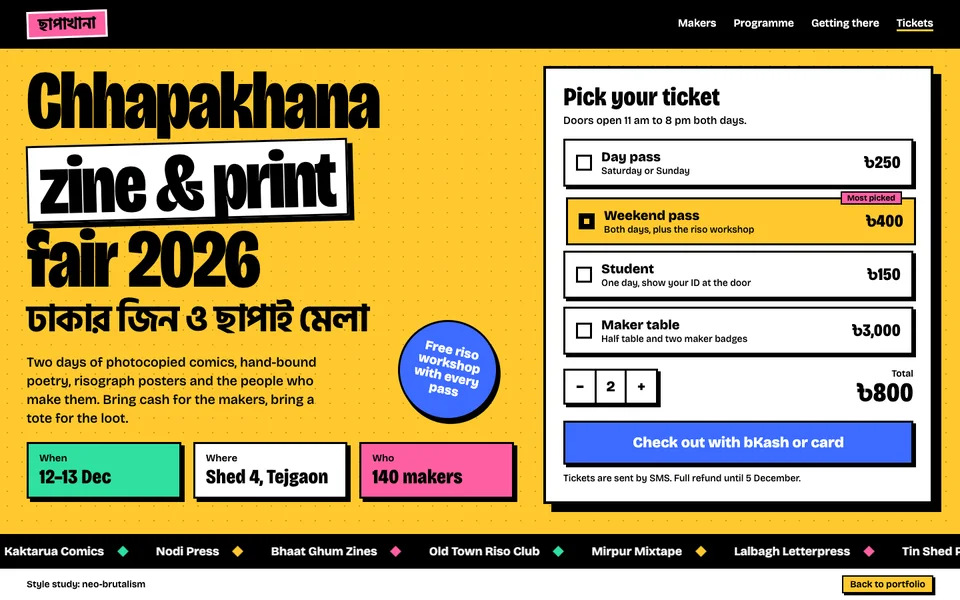</div>
        <h4>Neo-brutalism <span>Ticketing</span></h4>
        <p>Tickets for a Dhaka zine and print fair: hard shadows, thick borders, a live total.</p>
      </a>
      <a class="study" href="concepts/bento.html">
        <div class="thumb">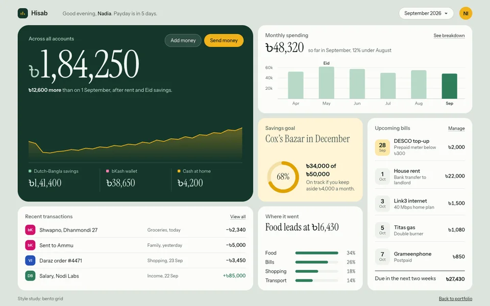</div>
        <h4>Bento grid <span>Finance</span></h4>
        <p>A personal finance dashboard where one hero tile and mixed spans do the organising.</p>
      </a>
      <a class="study" href="concepts/claymorphism.html">
        <div class="thumb">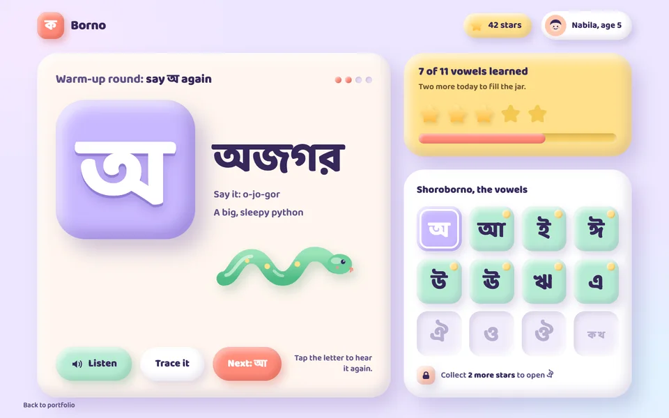</div>
        <h4>Claymorphism <span>Kids learning</span></h4>
        <p>A Bangla alphabet app for five-year-olds, built from puffy, pressable tiles.</p>
      </a>
      <a class="study" href="concepts/aurora.html">
        <div class="thumb">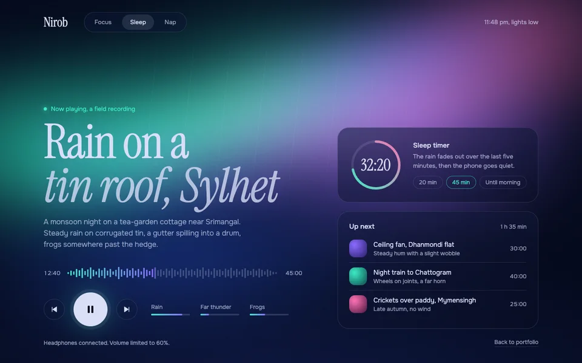</div>
        <h4>Aurora gradient <span>Sleep sounds</span></h4>
        <p>A night-time sound player under a slowly drifting aurora.</p>
      </a>
      <a class="study" href="concepts/swiss.html">
        <div class="thumb">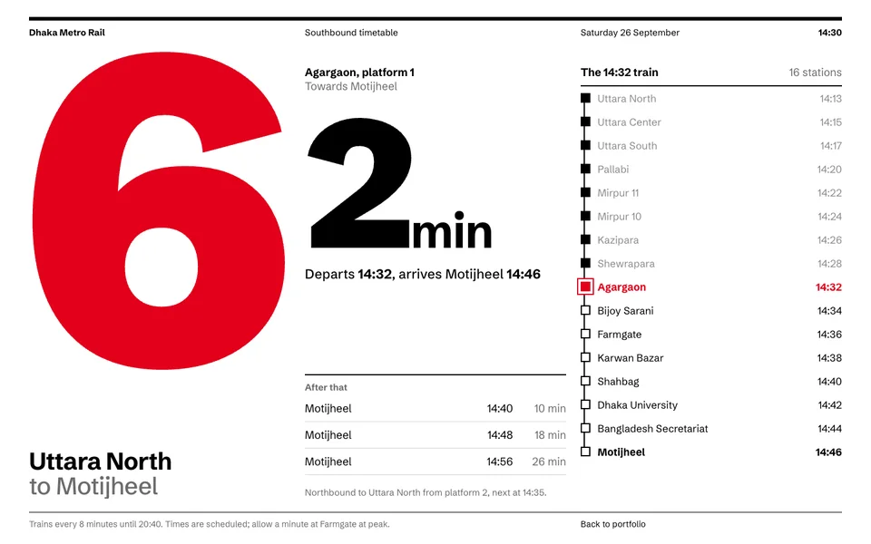</div>
        <h4>Swiss style <span>Transit</span></h4>
        <p>A Metro Rail Line 6 timetable where type scale and a strict grid carry everything.</p>
      </a>
      <a class="study" href="concepts/skeuomorphic.html">
        <div class="thumb">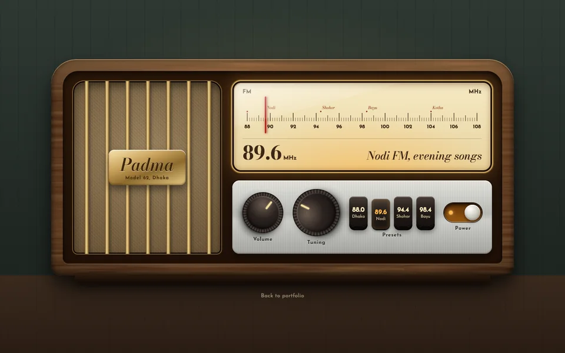</div>
        <h4>Skeuomorphism <span>Radio</span></h4>
        <p>A walnut FM radio with a glass dial, brass grille and working presets.</p>
      </a>
      <a class="study" href="concepts/y2k.html">
        <div class="thumb">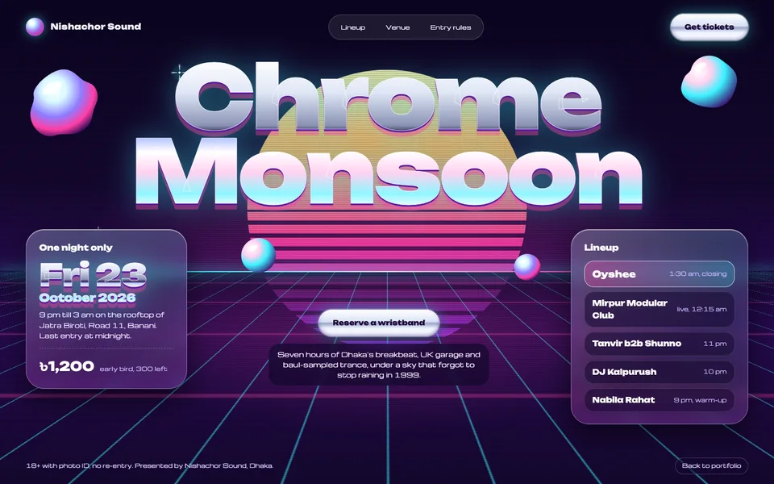</div>
        <h4>Y2K retro-futurism <span>Event</span></h4>
        <p>A landing page for a rooftop electronic night: chrome type over a synthwave grid.</p>
      </a>
      <a class="study" href="concepts/editorial.html">
        <div class="thumb">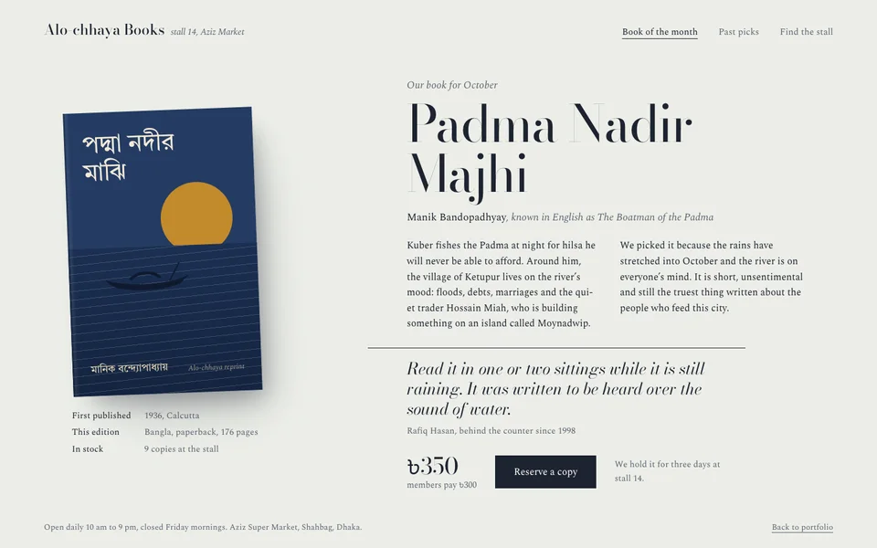</div>
        <h4>Editorial minimal <span>Bookshop</span></h4>
        <p>Book of the month for a small Aziz Market bookstall, set like a literary page.</p>
      </a>
      <a class="study" href="concepts/terminal.html">
        <div class="thumb">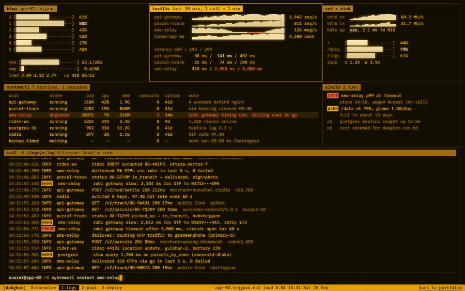</div>
        <h4>Terminal UI <span>Dev tools</span></h4>
        <p>A tmux-style monitoring console for a parcel-delivery backend during a failover.</p>
      </a>
      <a class="study" href="concepts/spatial.html">
        <div class="thumb">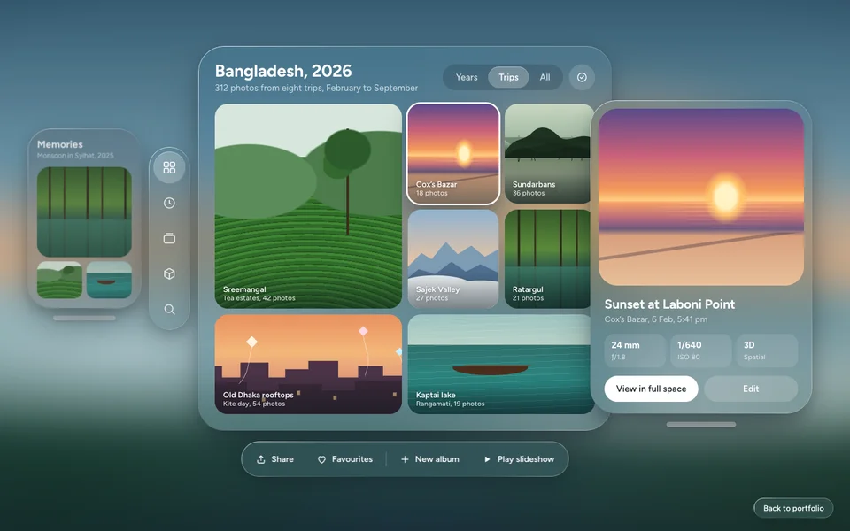</div>
        <h4>Spatial UI <span>Photos</span></h4>
        <p>A visionOS-style photo library of Bangladesh trips, in layered windows with parallax.</p>
      </a>
    </div>
  </section>

  <section id="process">
    <div class="sec-head">
      <div class="eyebrow">How I work</div>
      <h2>Three habits</h2>
    </div>
    <div class="stack">
      <div class="item"><div class="k">01</div><p><b>Find the constraint that eats the others.</b> Every project has one fact that decides most of the interface. A beautiful solution to the second-most-important problem is decoration.</p></div>
      <div class="item"><div class="k">02</div><p><b>Design the empty, stale and failed states first.</b> The happy path is the easiest 20% and the least used. Starting at the edges usually changes the happy path too.</p></div>
      <div class="item"><div class="k">03</div><p><b>Build it.</b> A system that survives its own implementation has no unused tokens and no component that works at only one width. Engineers get decisions, not homework.</p></div>
    </div>
  </section>

  <section id="contact">
    <div class="sec-head">
      <div class="eyebrow">Contact</div>
      <h2>Available for senior UI/UX and product design roles</h2>
      <p class="lede">Remote, or in Dhaka.</p>
    </div>
    <div class="contact">
      <a class="btn" href="mailto:shaifurrahamanshifat71@gmail.com">shaifurrahamanshifat71@gmail.com</a>
      <a class="btn ghost" href="https://linkedin.com/in/shifat71" target="_blank" rel="noopener">LinkedIn</a>
      <a class="btn ghost" href="https://github.com/shifat71" target="_blank" rel="noopener">GitHub</a>
    </div>
  </section>

  </div>
</main>

<footer>
  <div class="wrap foot">
    <span>Shaifur Rahaman · UI/UX &amp; Product Designer</span>
    <span>Dhaka, Bangladesh · <a href="mailto:shaifurrahamanshifat71@gmail.com">Email</a> · <a href="https://linkedin.com/in/shifat71" target="_blank" rel="noopener">LinkedIn</a> · <a href="https://github.com/shifat71" target="_blank" rel="noopener">GitHub</a></span>
  </div>
</footer>

